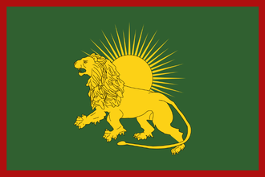
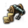
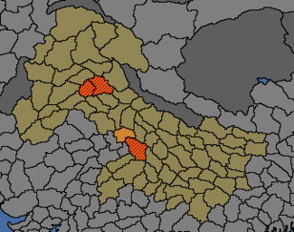

{kind=link}
{kind=link}
| 近东 |
| 波斯及中亚 |
| 北亚 |
| 东亚 |
| 东南亚 |
| 印度 |
 | |
|---|---|
| 莫卧儿 | |
| 政府等级 | 帝国 |
| 主流文化 | |
| 首都 | |
| 政体 | 印度苏丹国 |
| 国教 | |
| 学派 | 哈乃斐派 |
| 科技组 | 印度科技组 |
| 莫卧儿的理念 |
此信息可能已落后版本，最后更新于1.35 ----
|
| +20% 骑兵作战能力 −25% 核心化花费 |
| −5% 科技花费
|
|
|
莫卧儿（英文：Mughals）帝国是突厥化蒙古征服者帖木儿的后裔巴布尔在印度建立的穆斯林国家。18世纪全盛时期的领土几乎囊括南亚次大陆以及阿富汗等地，最后因沙贾汗时期留下来的一系列问题衰落，在  锡克教和马拉地叛乱打击下被
锡克教和马拉地叛乱打击下被  大不列颠吞并。游戏中，玩家可以在后期剧本选择莫卧儿帝国，或使用伊朗及中亚国家吞并特定省份来成立它。
大不列颠吞并。游戏中，玩家可以在后期剧本选择莫卧儿帝国，或使用伊朗及中亚国家吞并特定省份来成立它。
莫卧儿帝国的特殊政体与文化同化机制可以让玩家拥有更好更丰富更有趣的游戏体验。
|
|
只适用于DLC达摩激活时。 |
莫卧儿帝国拥有独特的政府改革底万（英文：Diwan），用以替代通常国家的文化接纳机制。该体制不需要花费外交点数来接纳新文化，但是需要征服该文化的所有省份，在此之后该文化才会被接纳。这将禁用更改主流文化和已接受文化按钮。但是你仍然能通过通常的方法改变省份的文化。
底万体制无接纳文化数量上限，并且接纳一个旧大陆文化组中的所有文化会给予额外的奖励，如下所示；印度的五种文化组列于本表的最上方。
| 印度斯坦： | |
|---|---|
| 东雅利安： | |
| 中印度： | |
| 达罗毗荼： | |
| 西雅利安： | |
| 阿尔泰： |  −10% 炮兵花费 |
| 拜占庭： | |
| 波罗的： | |
| 不列颠： | |
| 缅甸： | |
| 喀尔巴阡： | |
| 高加索： | |
| 凯尔特： | |
| 中华： | |
| 刚果： | |
| 库希特： | |
| 大湖地区： | |
| 东班图： | |
| 东斯拉夫： | |
| 鄂温克： | |
| 法兰西： | |
| 日耳曼： | |
| 伊比利亚： | |
| 伊朗： | |
| 日本： | |
| 堪察加： | |
| 朝鲜： | |
| 拉丁： | |
| 失落文化： | |
| 黎凡特： | |
| 马格里布： | |
| 马来： | |
| 曼丁哥： | |
| 孟-高棉： | |
| 太平洋： | |
| 萨赫勒： | |
| 北欧： | −10% 军事顾问花费 |
| 南斯拉夫： | |
| 南非： | |
| 苏丹： | |
| 鞑靼： | |
| 泰： | |
| 藏： | +0.5 每点发展度传教带来的威望 |
| 乌戈尔： | |
| 西非： | |
| 西斯拉夫： |
 主流文化属于伊朗文化组，或是土库曼、乌兹别克、吉尔吉斯文化的穆斯林国家在满足条件时可以成立莫卧儿。成立莫卧儿会将该国的主流文化转变为印地文化（印度斯坦文化组），科技组转变为
主流文化属于伊朗文化组，或是土库曼、乌兹别克、吉尔吉斯文化的穆斯林国家在满足条件时可以成立莫卧儿。成立莫卧儿会将该国的主流文化转变为印地文化（印度斯坦文化组），科技组转变为  印度科技组。脚本代码位于：/Europa Universalis IV/decisions/MughalNation.txt。
印度科技组。脚本代码位于：/Europa Universalis IV/decisions/MughalNation.txt。
|
|
这条信息可能已不适合当前版本，最后更新于1.35。 |
$MONARCH$已经为他的新帝国奠定了坚实的基础。虽然人数不多，但他纪律严明的军队在对抗印度苏丹的战役中打了不少的胜仗。特别是$CAPITAL$之战成为了这一系列扩展疆土的战役中的第一个胜仗。在不久的将来，莫卧儿帝国将横扫整个印度半岛。
潜在需求
|
接受
|
效果
| |
AI决议权重：

另参见：莫卧儿任务/达摩、莫卧儿任务/基础游戏
DLC  达摩开启时，莫卧儿拥有一组豪华且奖励丰厚的任务树，引导其统一全印度，并进一步向东西两个方向扩张。未开启DLC时，莫卧儿只能使用数个老式任务。
达摩开启时，莫卧儿拥有一组豪华且奖励丰厚的任务树，引导其统一全印度，并进一步向东西两个方向扩张。未开启DLC时，莫卧儿只能使用数个老式任务。
在  变革之风中，莫卧儿获得了达摩任务的升级版。
变革之风中，莫卧儿获得了达摩任务的升级版。
|
|
这条信息可能已不适合当前版本，最后更新于1.35。 |
罗珊娜拉别姬是她弟弟奥朗则布获得莫卧儿帝国皇位的幕后主谋，而且要不是有她，奥朗则布可能已经被他的父亲和兄长杀死。这位公主不但是一位聪慧的女人和一位极有天赋的诗人，也是莫卧儿帝国最臭名昭著的女人之一。是她下令砍下她兄长达拉·西柯赫的头，并把他的头颅包裹在金色的头巾里送给他们的父亲。沙·贾汗在看到自己最喜爱的儿子的头颅时昏了过去，并在之后的许多天里都在麻木之中。
罗珊娜拉喜爱金子和土地，而通过使用各种令她弟弟所不齿的道德败坏的方法，她也成功得到了这两样东西。她与奥朗则布的关系不断恶化，最后他决定要剥夺罗珊娜拉的权力，把她驱逐出宫廷，并命令将她软禁在德里郊外的宫殿中让她过上虔诚的生活。
触发条件
|
平均发生时间
200 月 |
立即生效
| |
无视她的弟弟，让她成为统治者。
说服她的弟弟，让她成为一个优秀的顾问
| |
|
|
这条信息可能已不适合当前版本，最后更新于1.35。 |
$COUNTRY$的皇后，贾汉吉尔的妻子是一位有着惊人的智慧，魅力，反复无常的脾气和完备的常识的女子。努尔·贾汗精通艺术，文学，音乐和舞蹈，能熟练使用阿拉伯语和波斯语，同时也是在这片土地上最强大而有影响力的女人。由于丈夫贾汉吉尔对她的深爱以及对鸦片和酒精的上瘾，她得以在文化，慈善，贸易和国家的管理上都有所贡献。你可以看到她与贾汉吉尔一同站在宫廷的阳台上接待访客，公布条令，管理国家，资讯顾问。她很轻松地便说服皇帝提拔她的父亲米尔扎·吉亚斯·贝格为总管，任命她的兄弟阿萨夫·汗为大维齐尔。通过她的继女拉德里与贾汉吉尔的幼子沙赫里亚尔以及她的侄女阿姬曼·芭奴·贝古姆与王子库拉姆之间的联姻，她增强了在宫廷中的力量并保证了与皇位间的联系。她在捕猎老虎时所表现出的勇气和健壮在之后抵抗$COUNTRY$的反叛与守卫国家的边境与家族领地时也表现出了极大的作用。就在最近，她从由马哈巴特·汗领导的叛军手中救出了丈夫。她骑着战象领导着部队抵抗叛军，但当她的坐骑被杀死后不得不投降。马哈巴特·汗将她与她的丈夫一同囚禁，自以为赢得了一场决定性的胜利。努尔·贾汗最终证明了他是错的——就在他的眼皮底下，她运用自己的创造力和智慧培养出了一支部队，并最终与丈夫一起逃离了监禁。
触发条件
|
平均发生时间
200 月 |
立即生效
| |
智慧而有创意——正是我们所需要的！
她已经让我们信服了——就由她来领导我们！
| |
|
|
这条信息可能已不适合当前版本，最后更新于1.35。 |
她的原名是阿姬曼·芭奴，但她的丈夫，库拉姆王子，未来的皇帝沙·贾汗在为她的美貌和性格所倾倒之后，赐予了她穆姆塔兹·马哈尔的称号，意为「宫中获选者」。他们之间的爱情，亲密与激情是那么的强，以至于沙·贾汗忽视了他的另外两个妻子，仅仅像是例行公事般与她们各生了一个孩子。诗人歌颂着她的美丽，优雅与怜悯之心，而宫廷历史学家们记下来他们之间充满亲密与情欲的关系。穆塔兹·马哈尔从未离开沙·贾汗的身边，与他一同在$COUNTRY$的各地游历。沙·贾汗十分信任她，以至于将他的皇家印章也赠与了她。虽然她没有任何的政治野心，但她仍然常常代表着穷苦的底层人民向她的丈夫提出建议。十三次身孕渐渐地摧残着她的身体，最终她没有能撑过第十四次。沙·贾汗因她的死而悲痛欲绝地悼念了整整一年，当他回来时，连头发都变得花白。他的脊背已经弯曲，面颊也饱经沧桑，只有他的长女贾哈那拉能够让他走出伤痛。他亲自为亡妻设计了泰姬陵，把它作为穆塔兹·马哈尔的陵墓。
| 触发条件 | 平均发生时间
200 月 |
立即生效
| |
选择条件
这片大地沉浸于伤痛之中，我们永远也不会忘记穆姆塔兹·马哈尔。
确保泰姬陵能够完工。
| |
|
|
这条信息可能已不适合当前版本，最后更新于1.35。 |
穆罕默德·阿扎姆王子的妻子扎汗则布·巴努·贝古姆于王子的家族中在军事和外交两个方面都扮演着重要的角色。她是一位美丽，有教养而勇敢的女人，她在维持家族和睦上的能力以及被数次考研过了。她确保在家族成员之间培养出一种强大的，同甘共苦的情谊。如果没有她，穆罕默德·阿萨姆王子恐怕在一次争吵之后永远也无法原谅猎人总管米尔·黑达亚图拉。阿萨姆十分信任她，因为她是阿萨姆最喜欢的一个妻子。这一点在她说服阿萨姆让米尔·黑达亚图拉回到家族时起到了很大的作用。他们的儿子，比达尔·巴赫特王子与阿萨姆之间的关系常常因皇宫中的事宜受到破坏，而扎汗则布的工作就是要缓解他们之间的关系并让他们友好相处。当有一次她的丈夫因为父亲的传唤而离开时，她就曾统帅丈夫的部队作战。三年之后，她又骑上了她的战象，准备带领着[Root.GetAdjective]对敌人展开一场已经推迟了的反击。她当时保证，一旦[Root.GetAdjective]的军队败北，她就将自杀。幸运的是，这种情况没有发生。
|
|
这条信息可能已不适合当前版本，最后更新于1.35。 |
拉杰库玛丽·希尔·恭伐罗为她的丈夫阿克巴皇帝生下一个儿子之后，皇帝授予了她「玛丽亚姆-乌兹-扎马尼」（Mariam-uz-Zamani）的称号，意为「这时代的玛丽」。并且皇帝给他们这个儿子起名为萨利姆，以表达对那位许诺他将有三个儿子的圣人，萨利姆·基什蒂的认可。虽然玛丽亚姆是阿克巴的第三个妻子，但作为帝国继承人的母亲，她取得了比阿克巴的其他妻子更为优先的地位。她是一个印度教徒，因此她和阿克巴皇帝的婚姻使得阿克巴在印度教和他的印度教臣民中受到崇敬。这场婚姻同时在阿克巴的统治期间为他带来了来自玛丽亚姆的家族的强大支持。并且，通过这场婚姻，阿克巴向他的全体臣民释放了一个信号：他是信仰任何宗教的人民共同的巴德沙赫。极少有宫中的女人被授予颁发「法尔曼敕令」，一种象征皇帝特权的官方文件的权利。但阿克巴对玛丽亚姆的充分信任使得他将这种特权授予了她。在颁发「法尔曼敕令」的时候，玛丽亚姆使用她的称号「瓦里·尼玛特·贝加姆」，其意为「神的礼物」。她用自己在香料、丝绸和许多其他商品的国际贸易中积累的财富建造花园、水井和清真寺。玛丽亚姆的私人财产使许多欧洲国王相形见绌，她是一位敢于冒险的商人，也是宫廷里最伟大的商人。她还是唯一一个拥有高达1,200的曼萨布等级的女人（曼萨布，是莫卧儿帝国的武官和高级文职军事官员的职级系统，规定了这些军事官员的地位和俸禄。阿克巴统治期间，曼萨布的最低等级为10，最高为12,000）。她的船队载着朝圣者们往返麦加，而当被称为「伟大的朝圣者之船」的拉西米号和船上的600位乘客被欧洲士兵扣押并且拒绝释放的时候，宫中的愤怒在圣城都能被听到。虽然最终这艘船和它的乘客们都被释放了，但她对那些阻碍朝圣者到达麦加的人始终怀恨在心。
触发条件
|
平均发生时间
200 月 |
立即生效
| |
让她掌管国库，她已经证明了自己管理财产的能力。
她敏锐的商业意识会有利于我们的贸易。
| |
|
|
这条信息可能已不适合当前版本，最后更新于1.35。 |
通过推行结合了伊斯兰教和印度教基本教义的全新宗教思想，来减少大众宗教分歧带来的社会动荡。
潜在需求
|
接受
|
效果
| |
AI决议因子：
0：
除了正宗的帖木儿变莫卧儿，察合台也是个不错的选择，1.29满洲版本让察合台有了独有理念，双吞这种理念对于察合台这种游牧其实没多大用，虽然这种是T0级别超强理念，而且相比他的东方游牧朋友来讲，察合台没有任务树，加上逊尼派限制，察合台想要很快入主中原是不太现实的。而你的邻居除了瓦剌，就是乌兹别克。乌兹别克开局在西伯利亚有相当大的基准叛乱，很快国家就会土崩瓦解，而下面的帖木儿会陷入内乱，他们都是阿尔泰文化组。所以，你吃地和枣核的效率会高很多，然后吃进印度，变莫卧儿就行。莫卧儿和察合台理念都相当强力，可以按照自己需求选择。
其二是一种精神快乐打法：选择察合台，打大明儒教省份，通过叛军传教，变儒教然后和谐逊尼派。再打进印度变莫卧儿。（注：成立莫卧儿前提条件应为国家属于穆斯林宗教组，因此察合台如转为儒教应当无法成立莫卧儿）除了转教和和谐有点漫长，但是你可以体会到不用洗地不用传教（特别现在可能也传不起教）儒教莫卧儿还可以抢天命。新版本的天命也是个很好的东西，减厌战，减自治度。也不会因为接壤非朝贡国掉天命值。
莫卧儿=蒙古 儒教+皇帝=天朝 察合台=黄金家族 加上强力任务树和理念。不乏是一种有趣的玩法。适用于新版本的喜欢有代入感的察合台玩家，也可以很好的完成哈拉和林甜蜜的家这个成就。（精神黄金家族 精神天子）雾
由于转教似乎导致了任务树有关阶级内容没法子完成，玩家请考虑一下。不过值得一提的是，这些其他任务不会影响主要任务的进度，他们都只有给一个十几年的宗教容忍或者叛乱，甚至是增加几十点神秘主义，并无伤大雅。最重要的永久宣称任务依然可以完成。
由于莫卧儿底万政府改革可以在拥有一个文化组的全部省份时将其同化并给予加成，在游玩游戏时可以建立一个由AI操控的自定义小国，将其主流文化设为某种失落文化，这样吞并这个小国后就可以同化失落文化组，其效果为
 +5% 训练度，还是很不错的。
+5% 训练度，还是很不错的。

Sweet Home Qaraqorum 哈拉和林，甜蜜的家 作为莫卧儿，同化蒙古文化。 |

True Heir of Timur 帖木儿真传 以帖木儿附庸开局，1550年之前成立莫卧儿并征服印度。 |

Baborg 巴博格 作为莫卧儿，同化至少12个文化组。 |
| 近东 |
| 波斯及中亚 |
| 北亚 |
| 东亚 |
| 东南亚 |
| 印度 |
| 北非 |
| 东非 |
| 中非 |
| 东南非 |
| 西非 |
| 西南非 |
| 伊比利亚 |
| 法兰西 |
| 低地 |
| 不列颠 |
| 北欧及波罗的 |
| 中欧 |
| 北德意志 |
| 南德意志 |
| 意大利 |
| 巴尔干及安纳托利亚 |
| 东欧 |
| 中美洲 |
| 墨西哥 |
| 北美东北 |
| 北美东南 |
| 北美中西部 |
| 部落联盟国家 |
| 前殖民领国家 | |
| 海盗共和国 |
| 南美北部 |
| 安第斯山区 |
| 南美东部 |
| 南美南部 |
| 前殖民领国家 |
| 澳大利亚 |
| 南太平洋 |
| 北太平洋 |
| 前殖民领国家 |